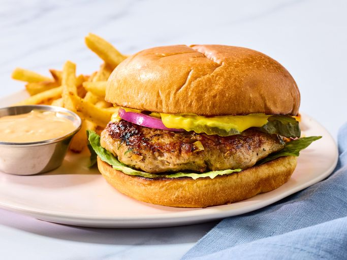

Burger Recipe

Description
This is the recipe for a delicious Tukey Burger Recipe a master class on how to make a succulent delicious burger
A one stop recipe with minimal steps done in 15 mins
Ingredients
- 3 pounds ground turkey
- ¼ cup seasoned bread crumbs
- ¼ cup finely diced onion
- 2 egg whites, lightly beaten
- ¼ cup chopped fresh parsley
- 1 clove garlic, peeled and minced
- 1 teaspoon salt
- ¼ teaspoon ground black pepper
Steps
- Gather all ingredients.
- Mix ground turkey, seasoned bread crumbs, onion, egg whites, parsley, garlic, salt, and pepper together in a large bowl.
- Form into 12 patties.
- Cook the patties in a medium skillet over medium heat, turning once, to an internal temperature of 180 degrees F (85 degrees C).
- Serve hot and enjoy!